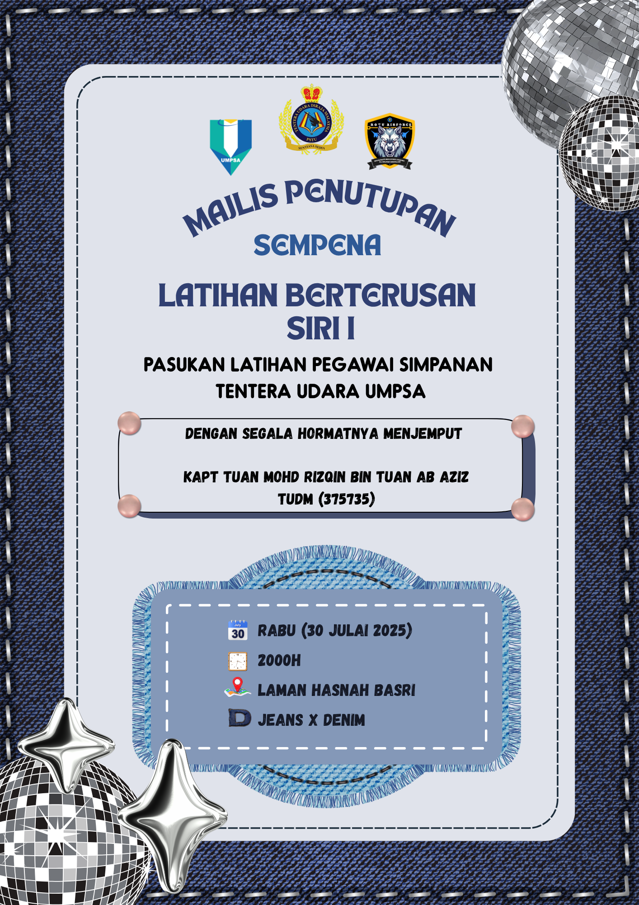
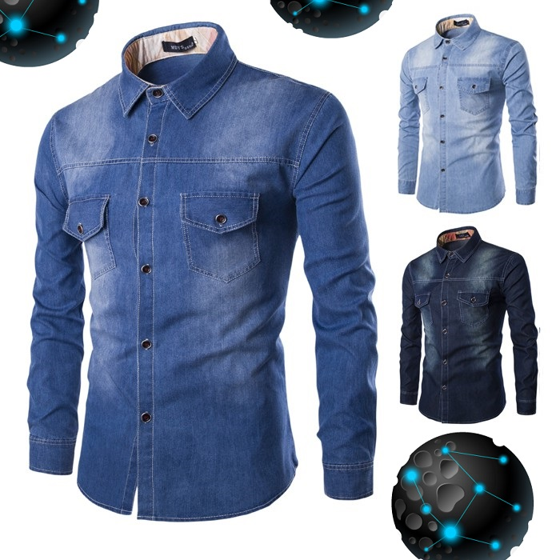
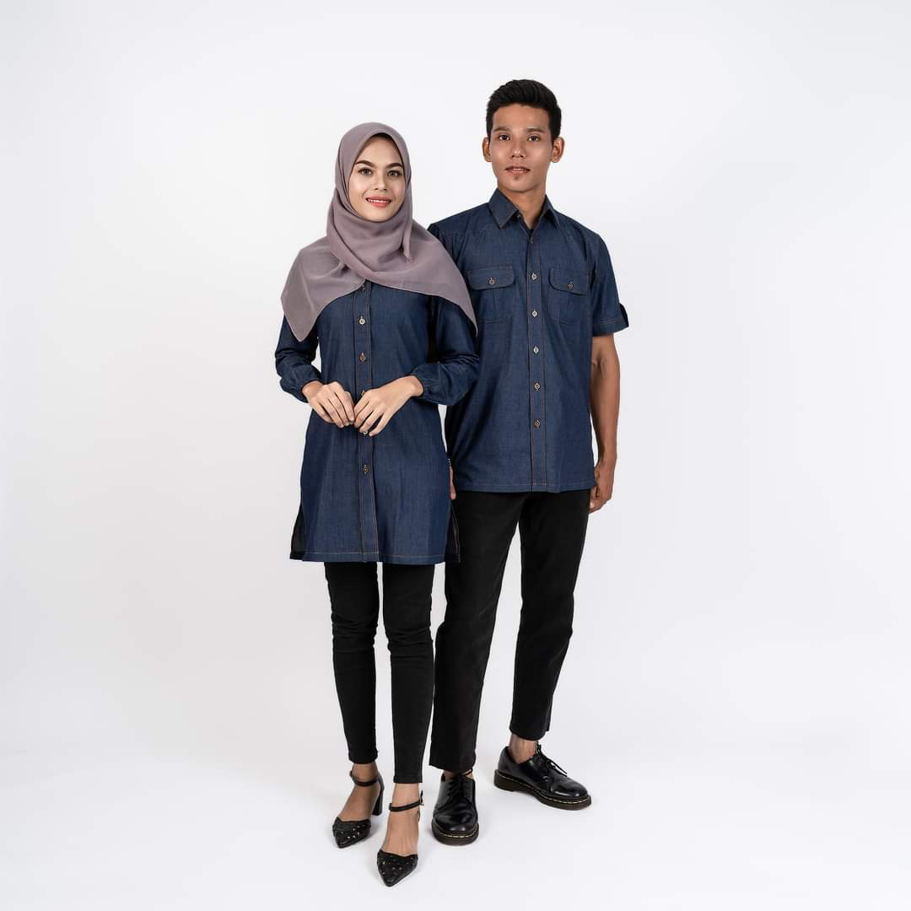

Kad Jemputan
Majlis Penutupan Sempena Latihan Berterusan Siri I
BUKA

Kiraan Detik ke Majlis
Maklumat Majlis
Tarikh:
Rabu, 30 Julai 2025
Masa:
2000H - 0030H
Lokasi:
Laman Hasnah Basri, Kuantan
Pemakaian Cadangan
 
Video tidak disokong oleh pelayar anda.
ATURCARA
MENU
LOKASI